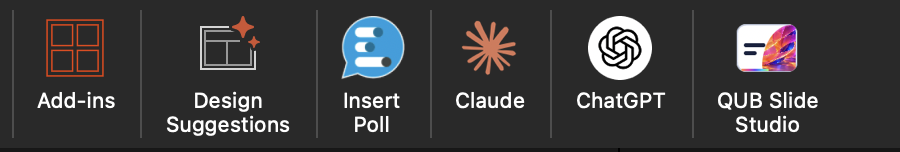
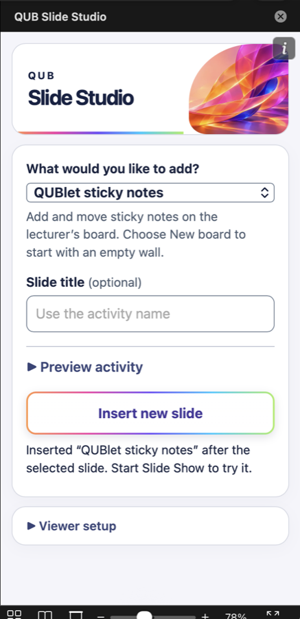
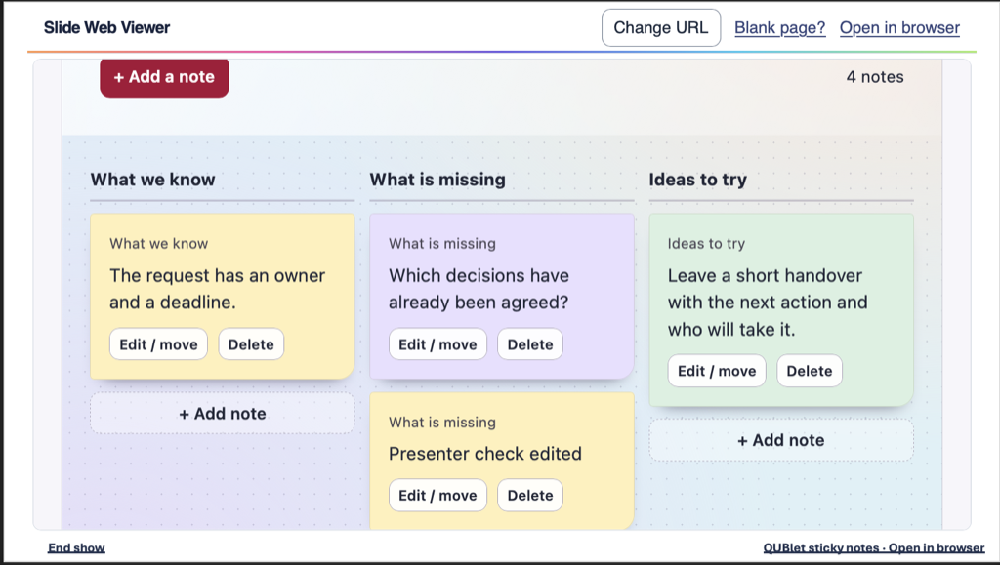
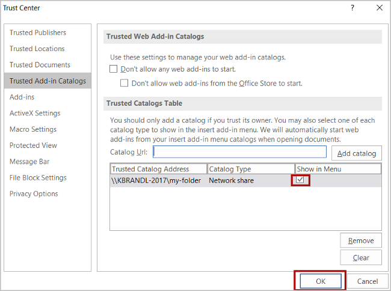
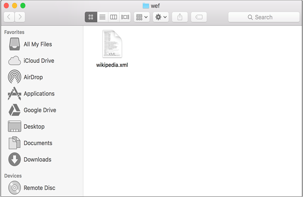

QUB Slide Studio · Pilot guide
Open a PowerPoint presentation, add a sticky-note board and try it in Slide Show.



Keep a copy of your notes. To use the board again after closing PowerPoint, open the board’s save options and click Save editable board. Saving the slide stores the activity link.
Try a website next. In Studio choose Webpage or embed, paste an HTTPS web address or iframe embed code, then click Insert new slide. If a site requires its own browser or sign-in, use Open in browser on that slide.
At a lectern? Ask the pilot lead for the shared folder address for that room. If Studio already opens from Home, go straight to your first slide. You need internet and access to the pilot folder under your own Windows sign-in.
If the lead has already put the files there, skip to step 2. Otherwise download the pilot ZIP. In File Explorer → Downloads, right-click WorkshopAddins.zip, choose Extract All → Extract. Copy qub-slide-studio.xml and slide-web-viewer.xml into the shared folder supplied by the lead. Keep both together.
In desktop PowerPoint, open File → Options → Trust Center → Trust Center Settings → Trusted Add-in Catalogs. In Catalog Url, paste the network address supplied by your lead. It looks like \\server\WorkshopAddins. Use your actual address. If Windows copied WorkshopAddins (address), remove the folder label and both brackets. Ask the lead for the network path if you only have a OneDrive or SharePoint web link.
Click Add catalog. Tick Show in Menu beside your new entry. Click OK in both windows. Save your work, close all PowerPoint windows and reopen PowerPoint.

Open a blank presentation. Click Home → Add-ins → Advanced → Shared Folder. Click Refresh, select QUB Slide Studio and click Add. You should also see Slide Web Viewer listed. Studio is the panel you open.
At the bottom of the panel click Viewer setup. Under Viewer installation, choose Windows shared test folder. Paste the same network path into Network folder, then click outside the box. Leave the optional personal viewer file empty. Add your first slide.
~/Library/Containers/com.microsoft.Powerpoint/Data/Documents